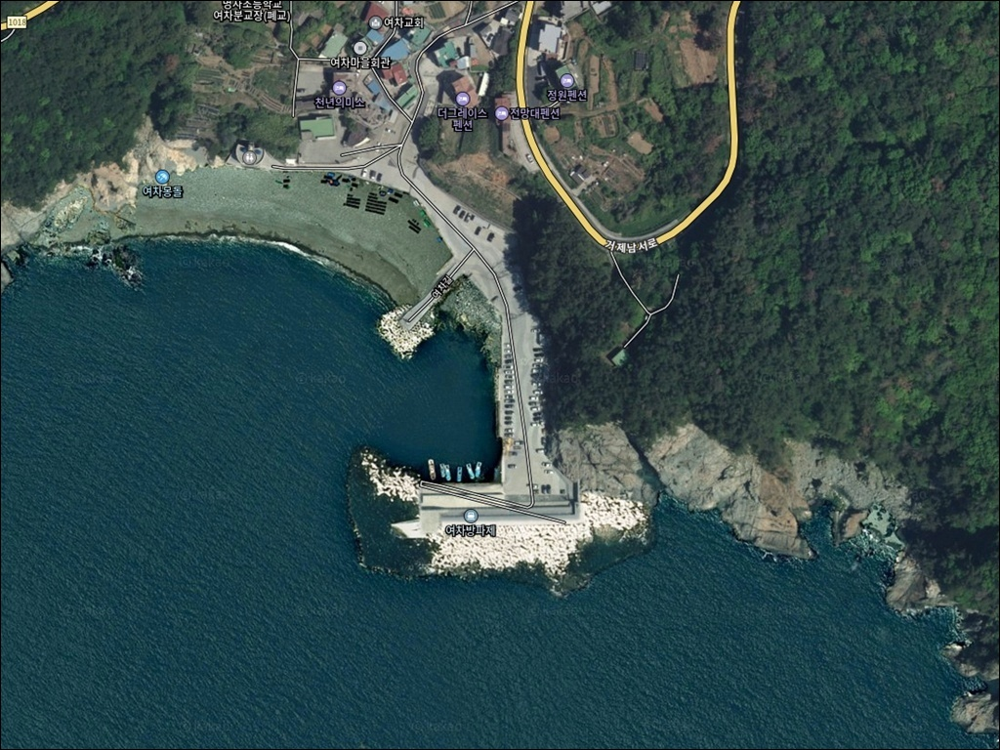
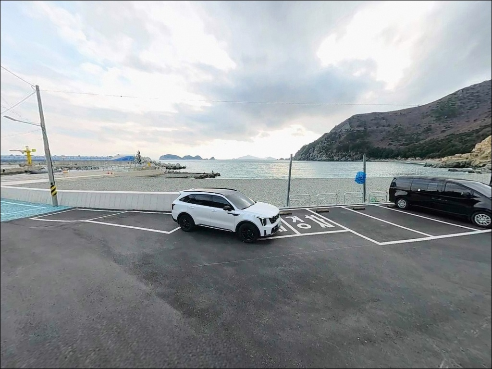
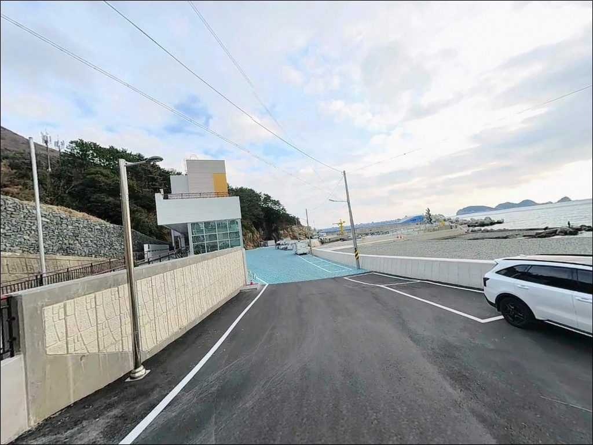
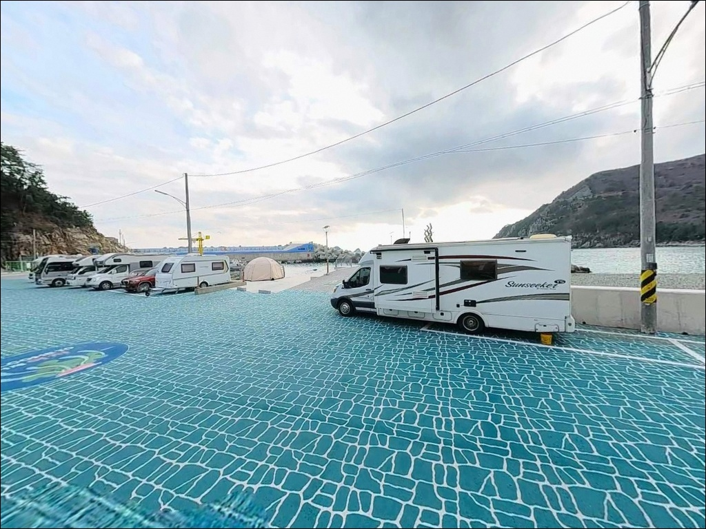
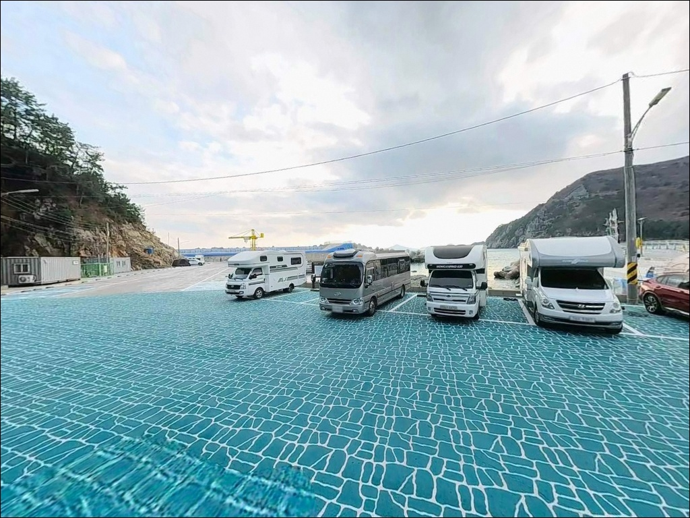
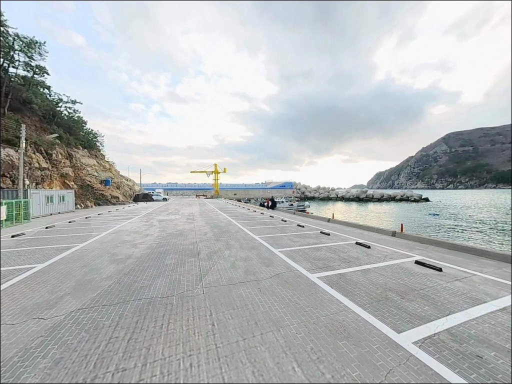
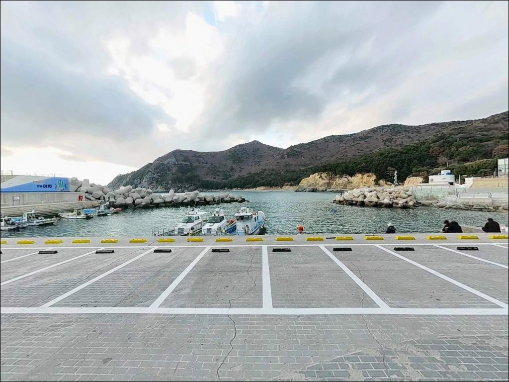
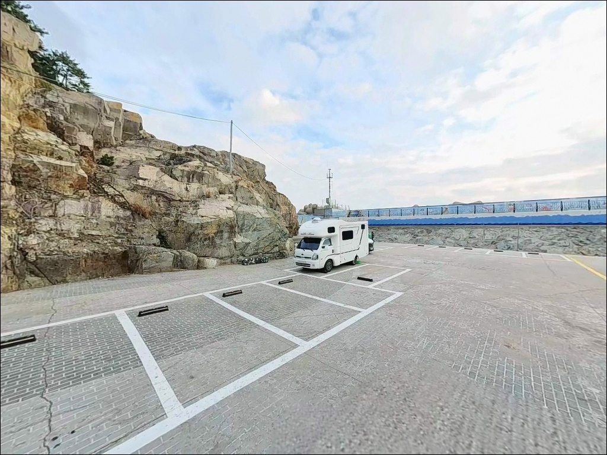
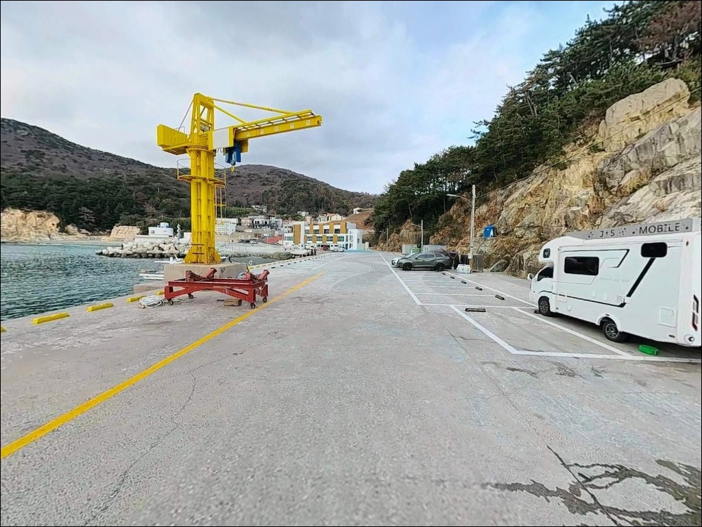

외항 진입 막힌 거제 여차방파제, 내항 갯바위 접속부에서 확인한 수심
이 페이지에는 광고(제휴 링크 포함)가 있으며, 광고 링크를 통해 구매하면 운영자가 판매 수익 또는 수수료를 받을 수 있습니다. 포인트 사진: 카카오맵 스카이뷰·로드뷰. 이 페이지의 지도·사진 이미지는 카카오맵의 실제 서비스 이미지와 다를 수 있습니다.


포인트 안내
여차방파제
경남 거제시 남부면 다포리 52-7
외항 테트라포드를 낚시 목표로 삼고 여차방파제를 찾으면
실제로는 올라설 자리 자체가 없습니다.
수차례 증축된 대형 테트라포드가 외항 전면을 막고 있어
투척도, 발판 확보도 모두 어려운 구조입니다.
이 포인트의 낚시는
방파제 내항 갯바위 접속부와
바로 인접한 여차몽돌해변으로 나뉩니다.
두 구간을 세트로 이해하고 진입해야
여차방파제를 제대로 공략할 수 있습니다.
이 글은 여차방파제의 낚시 여건과
진입 환경, 차박 체류 조건에 집중합니다.
조황 단정이나 특정 어종 보장은
이 글의 범위에 포함되지 않습니다.

1. 진입 동선과 포인트 접근성
여차방파제는 거제 남부 해안도로를 따라
여차마을로 내려가는 방식으로 접근합니다.
마을 진입 직전 구간에 좁은 커브와
경사 구간이 포함되어 있습니다.
전 구간 포장이 완료된 도로이지만,
대형 SUV나 장축 캠핑 차량이라면
출발 전 위성지도로 진입로 폭을 확인하는 것이
기본입니다.
방파제 입구 쪽 어촌마을 전면에
소규모 주차 가능 구간이 있으며,
여차몽돌해변을 따라 이어지는 도로변에도
차량 정차 공간이 일부 확보되어 있습니다.
성수기에는 관광객 차량이 혼재하므로
이른 시간 입장이 주차 여건에서 유리합니다.
방파제와 주차 공간 사이 거리가 짧아
낚시 장비를 옮기는 동선 자체는 무난합니다.
회차는 방파제 인근 및 해변 진입부 공터를
활용하는 방식이 일반적입니다.

2. 차박 환경과 야간 체류 여건
여차마을은 민가 밀집도가 낮은 소규모 어촌입니다.
야간 차량 통행이 적고 조용한 편이며,
외해를 직접 마주하는 구조라
파도 소리가 크게 들리는 특성이 있습니다.
기상 악화 시에는 바람의 영향도
내만권보다 빠르게 체감됩니다.
가로등은 마을 중심부와 방파제 진입로 일부에만
설치되어 있습니다.
외항 테트라포드 구간은 야간 조명이 없으므로
헤드랜턴은 필수 준비 장비입니다.
여차방파제 일대는
한려해상국립공원 구역 내에 위치합니다.
지정 장소 외에서는 야영·취사·불 피우기가
원칙적으로 허용되지 않습니다.
또한 2024년 9월부터 시행된 주차장법 개정으로
공영주차장 내 야영·취사도 과태료 부과 대상입니다.
방문 전 한려해상국립공원 사무소 또는
국립공원공단 누리집에서 현장 적용 범위를 확인하는 것이
먼저입니다.


3. 주변 편의시설 및 인프라 현황
여차방파제 반경 3km 이내에는
24시간 편의점이 없습니다.
식수·식재료·낚시 소모품 모두
출발 전에 완전히 갖추는 것이
현실적인 준비 방식입니다.
현장 낚시점인 여차낚시가
남부면 다포리 10번지에 위치합니다.
채비 소모가 잦은 지형이므로
여분 채비는 넉넉하게 준비해 두고,
부족분은 이 낚시점을 통해 보충할 수 있습니다.
반경 10km 권에서는
대포근포항(국가어항) 방면으로 이동하면
편의시설과 낚시 인프라를 이용할 수 있습니다.
응급 상황 발생 시 거제 고현동 시내까지
차량으로 20~30분 이상 소요되므로
비상약품과 충분한 수분도 기본 준비 항목입니다.

4. 방문 전 반드시 챙겨야 할 준비사항
거제 남부권은 외해 기준으로 풍랑특보가 적용됩니다.
내만권보다 기상 변화 속도가 빠르기 때문에
기상청 해상 예보와 파고 정보를
출조 전날 저녁, 출발 당일 아침
두 차례 확인하는 것이 기본입니다.
바닥이 암초와 자갈로 이루어진 지형이라
채비 손실이 잦은 편입니다.
여분 채비는 예상보다 넉넉하게 챙겨야
현장에서 당황하지 않습니다.
에깅 채비라면 3.5호 이상 에기를,
원투라면 봉돌 다수와 목줄을
충분히 준비하는 것이 기본 세팅입니다.
마을과 인접한 어촌 포인트이므로
소음 관리와 쓰레기 회수는 기본 매너입니다.
낚시 후 크릴·미끼 잔해는 물로 씻어내고,
야간에는 마을 쪽 불빛과 소음이
민가에 영향을 주지 않도록 주의합니다.

5. 외항이 막혀 있어도 낚시 자리가 남아 있는 이유
여차방파제는 태풍 피해로 수차례 증축되면서
외항 전면에 대형 테트라포드가 들어섰습니다.
외항 직공략은 어렵지만,
방파제 내항 갯바위 접속부와
여차몽돌해변이 그 역할을 대신합니다.
방파제 내항 초입 수심은 5m 내외이며,
원투 시 10m 이상으로 깊어지는 구간이
이어집니다.
여차몽돌해변은 방파제와 직결된 약 1km 길이의
자갈 해변입니다.
거제 남부 외해를 직접 마주하는 구조라
원투 원거리 수심이 20~30m 이상으로 깊게 형성됩니다.
해변 양 끝단 갯바위까지 이어지는 구간도
탐색해볼 만합니다.
내항·갯바위·몽돌해변을 세트로 보는 시각이
이 포인트를 제대로 공략하는 접근 방식입니다.
앞바다에는 대병대도·소병대도 등
도서군이 포진해 있어 조류가 복잡하게 형성됩니다.
조류 소통이 활발한 지형이라
갯바위 접속부 주변의 조류 흐름을
낚시 자리 선정의 기준으로 삼는 것이 효율적입니다.
최신 조황은 출발 전에 꼭 검색해 보시기 바랍니다.


6. 여차방파제에 어울리는 낚시 스타일
릴찌낚시가 이 포인트 지형 조건과 가장 잘 맞습니다.
방파제 내항과 갯바위 접속부의 조류 흐름에
채비를 실어 흘리는 방식이 유효하며,
수심 5~10m 구간을 반유동 채비로 공략하면
감성돔·벵에돔을 기대할 수 있는 지형 조건입니다.
원투낚시는 여차몽돌해변 전역이 포인트입니다.
외해 직면형 지형으로 원거리 수심이 깊게 형성되어
해변 중간부 어느 구간에서도
원투 채비를 운용할 수 있습니다.
바닥이 암초·자갈 혼합 지형이므로
채비 손실에 대비한 여분 봉돌과 목줄을
충분히 준비하는 것이 전제입니다.
에깅도 이 포인트에 잘 어울리는 스타일입니다.
거제 남부권 전역이 두족류 포인트로 분류되며,
내항의 수중 테트라포드 주변과 갯바위 기슭이
주 에깅 구간으로 꼽힙니다.
3.5호 이상 에기를 기준으로 운용합니다.
야간에는 방파제 내항 조명 주변과
갯바위 기슭을 중심으로
소형 지그헤드 채비를 운용하는
볼락 라이트게임도 고려할 만합니다.
갯바위 기슭의 은신처를 노리는
천천히 끌어오는 방식이 이 지형에 유리합니다.

7. 대안 포인트와 플랜 B 동선
여차방파제가 기상 악화로 진입이 어렵거나
주차 공간이 여의치 않을 때,
가장 먼저 이동할 곳은
다포항 방파제입니다.
여차에서 약 2km 거리로 진입이 용이하고
주차 여건이 여차보다 넓은 편이라
대기 자리로 삼기에 무난합니다.
낚시 조건을 더 살리고 싶다면
홍포선착장이 두 번째 대안입니다.
해안 도로로 2~3km 이내에 위치하며
내항 갯바위 구간에서 찌낚시·루어·에깅이 가능합니다.
진입로가 좁고 경사가 있으므로
초행 방문 시 낮 시간에 동선을 미리 확인해 두는 것이
야간 입장 시 사고를 막는 조건입니다.
강풍이나 너울 상황이라면
대포근포항을 대안으로 검토합니다.
여차에서 도로 경유 약 8~10km 거리의 국가어항으로
방파제 규모가 크고 시설이 정비되어 있습니다.
거제 남부권에서 바람을 피해
안정적으로 낚시할 수 있는
대표적인 우천·강풍 대비 포인트입니다.

내항과 몽돌해변을 묶어 보면
여차방파제의 낚시 그림이 달라집니다
릴찌낚시나 에깅, 원투낚시를 즐기는 낚시인이라면
여차방파제의 지형 구조는 충분히 매력적입니다.
외항이 테트라포드로 막혀 있다는 점이
처음에는 실망스러울 수 있지만,
내항 갯바위 접속부와 몽돌해변을 세트로 보면
다양한 방식을 실험할 수 있는 포인트입니다.
단, 한려해상국립공원 구역 내 야영 규정과
공영주차장 야영 제한은
방문 전 반드시 확인해야 할 조건입니다.
반경 3km 이내에 편의시설이 없으므로
자급 준비, 기상 확인, 진입로 사전 점검,
이 세 가지를 갖추고 간다면
거제 남부 끝자락의 조용한 낚시를
제대로 즐길 수 있는 포인트입니다.
외해의 파도 소리를 들으며
조류 흐름 따라 채비를 흘리고,
낚시를 마친 자리에서 하룻밤 머무는 여정을
계획하는 낚시인에게 여차방파제는
준비한 만큼 보답하는 곳입니다.